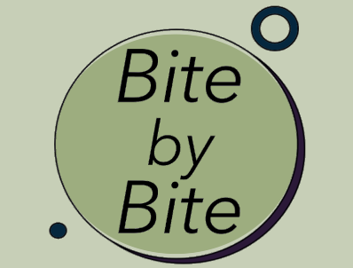

about us
Bite by Bite wants to bring more sustainability to the table. We want to connect local farmers with consumers. We think there is a need to change. The climate is steadily worsening and sustainability is lowering. People who want to contribute to the goal but do not know how, are given the opportunity with our company, to change the future Bite by Bite.
Mother Nature
Local food benefits the environment and wildlife. Well-managed farms provide ecosystem services: they conserve fertile soil, protect water sources, and sequester carbon from the atmosphere. The farm environment is a patchwork of fields, meadows, woods, ponds, and buildings that provide habitat for wildlife in our communities. Ordering food from local farmers also reduces the negative impact of export and import procedures because food doesnt have to travel all over the world. This helps keeping the co2 output down.
Local Farmers
Locally grown food supports the local economy. Supporting local farmers means supporting the local economy, which is major for any city. Money that is spent with local farmers and growers stays close to home and is reinvested with business and services within the community. It creates a cycle of local support! Purchasing local produce promotes eating seasonally. Although, you can get a lot of produce year round at the grocery store that doesn’t mean it’s in season. Adding in-season foods to your diet enhances the nutrients and excitement of meals at home.